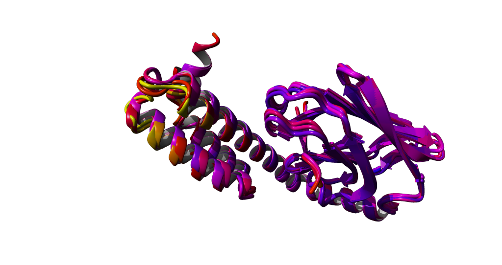

03 Compare Structures
question Questionsobjectives Objectives
- how to structurally align protein structures
- Use rigid body structural alignment in YASARA
time Time estimation: 15 minutes
Structural comparison and RMSD
We compare structures by structurally aligning them on top of each other. That is, we align structurally equivalent atoms. For now, we will only use CA atoms as a representation of the backbones. But Yasara also can align on any type of atom you want. You always need to specify:
- source object(s): the structure(s) that needs to be rotated and translated to superpose on anoth er structure
- target object: the structure to superpose on
An optimal alignment is found when the root-mean-square deviation (RMSD) is at a minimum. The RMSD is given as:

where R is the distance between two structurally equivalent atom pairs (CA in our case) and n is the total number of atom pairs.
hands_on Hands-on: Data download
Download the following adapted PDB files from Zenodo
1DKX_1.pdb 1DKY_1.pdb 1DKZ_1.pdb 3DPO_1.pdb 3DPP_1.pdb
Aligning multiple structures using YASARA
Now load all of them in YASARA:
File > Load > PDB File
and select the CA (C-alpha) view (F4) and superpose with the MUSTANG algorithm:
Analyze > Align > Objects with MUSTANG
In the first window you have to select the source objects that will be repositioned. Select Objects 2 till 5. In the second window you select the target Object to superpose on. That would then be the first object.
Notice that YASARA prints the RMSD of every structural alignment in the lower Console. Open the Console by pressing the spacebar once or twice to extend it.
Color the atoms by their B-factor:
View > Color > Atom > Belongs to or has > All
Then choose BFactor in the next window and press 'Apply unique color'.
High BFactors are yellow, low BFactors are blue.
question Questions
Do you see a correlation between the BFactors and the variability in the structure?
solution Solution

Conclusion
Structural alignment of related structures is a very efficient approach to spot similarities and differences of structutally related proteins.
keypoints Key points
- Superimposition of related structures is a very efficient approach to spot similarities and differences of structutally related proteins.
Useful literature
Further information, including links to documentation and original publications, regarding the tools, analysis techniques and the interpretation of results described in this tutorial can be found here.